Heart Speech Bubble
Direct QA pass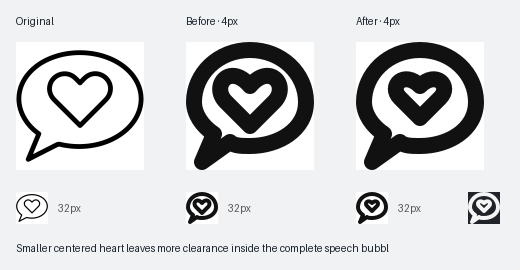
Smaller centered heart leaves more clearance inside the complete speech bubble.
Revised SVG · Previous SVG · Findings
Dining Fork and Knife
Direct QA pass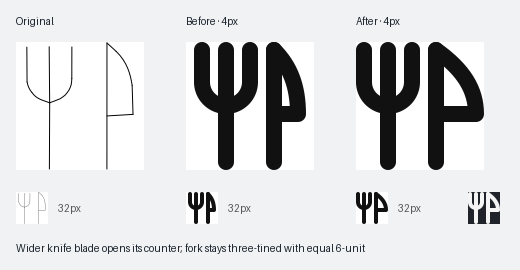
Wider knife blade opens its counter; fork stays three-tined with equal 6-unit spacing.
Revised SVG · Previous SVG · Findings
Starred Message Bubble
Review needed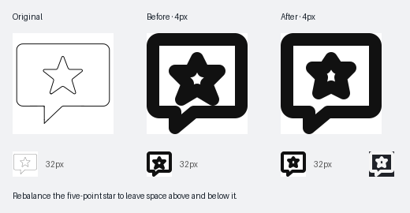
Rebalance the five-point star to leave space above and below it.
Revised SVG · Previous SVG · Findings
Thumbs Up Approval Symbol
Direct QA pass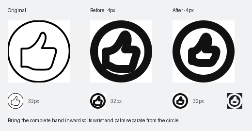
Bring the complete hand inward so its wrist and palm separate from the circle.
Revised SVG · Previous SVG · Findings
CSS Web Styling Symbol
Review needed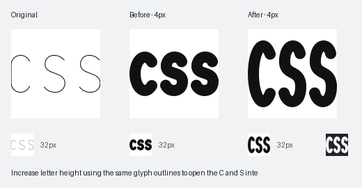
Increase letter height using the same glyph outlines to open the C and S interiors.
Revised SVG · Previous SVG · Findings
First Place Winner Podium
Review needed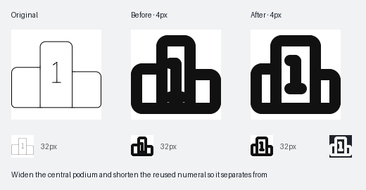
Widen the central podium and shorten the reused numeral so it separates from all podium edges.
Revised SVG · Previous SVG · Findings
Five Hundred Internal Server Error
Unresolved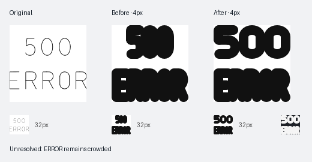
Try a wider 500 row; the five-letter ERROR row remains constrained by the 32px width.
Revised SVG · Previous SVG · Findings
Laptop User Profile
Review needed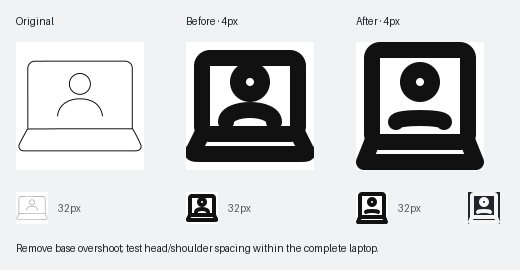
Remove base overshoot; test head/shoulder spacing within the complete laptop.
Revised SVG · Previous SVG · Findings
Male Gender Symbol with Slash
Unchanged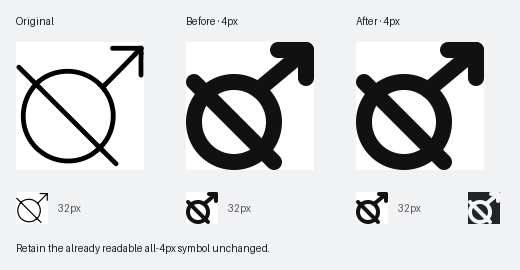
Retain the already readable all-4px symbol unchanged.
Revised SVG · Previous SVG · Findings
Medicine Search Magnifying Glass
Unchanged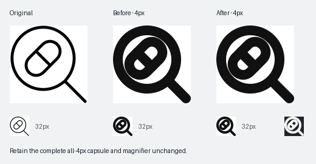
Retain the complete all-4px capsule and magnifier unchanged.
Revised SVG · Previous SVG · Findings
Skull and Crossbones Danger Circle
Review needed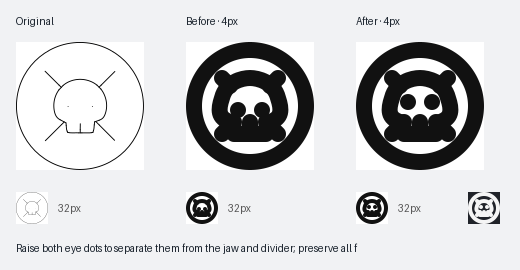
Raise both eye dots to separate them from the jaw and divider; preserve all four diagonals.
Revised SVG · Previous SVG · Findings
Skull Security Protection Shield
Review needed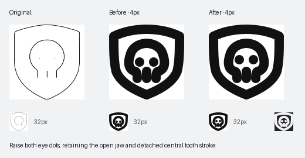
Raise both eye dots, retaining the open jaw and detached central tooth stroke.
Revised SVG · Previous SVG · Findings
Skull Speech Bubble
Review needed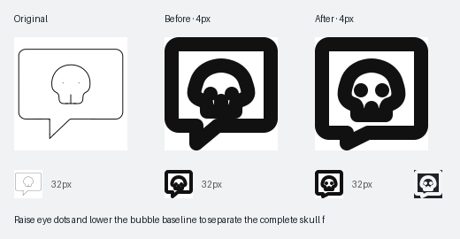
Raise eye dots and lower the bubble baseline to separate the complete skull from its frame.
Revised SVG · Previous SVG · Findings
Square Advertisement Icon
Review needed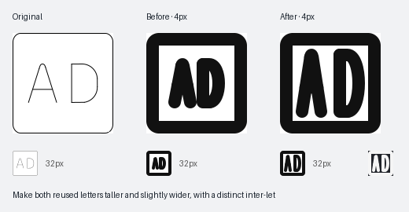
Make both reused letters taller and slightly wider, with a distinct inter-letter gap.
Revised SVG · Previous SVG · Findings
Text Search Magnifying Glass
Review needed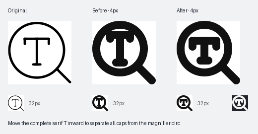
Move the complete serif T inward to separate all caps from the magnifier circle.
Revised SVG · Previous SVG · Findings